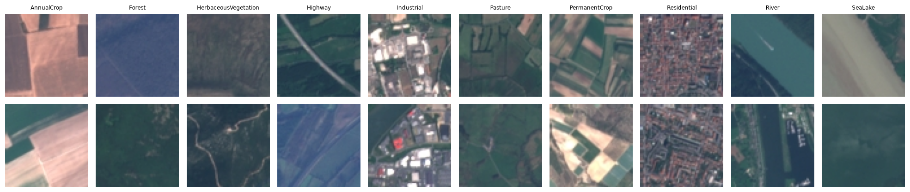
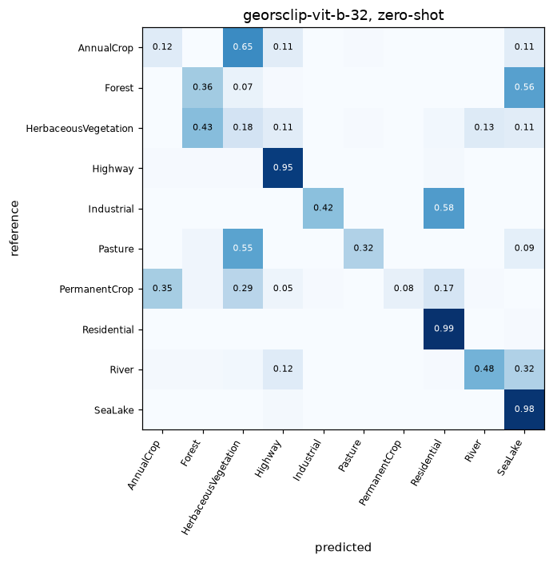
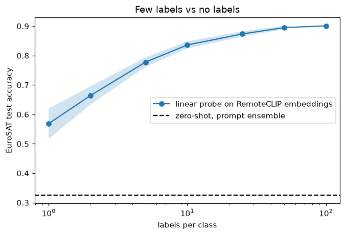
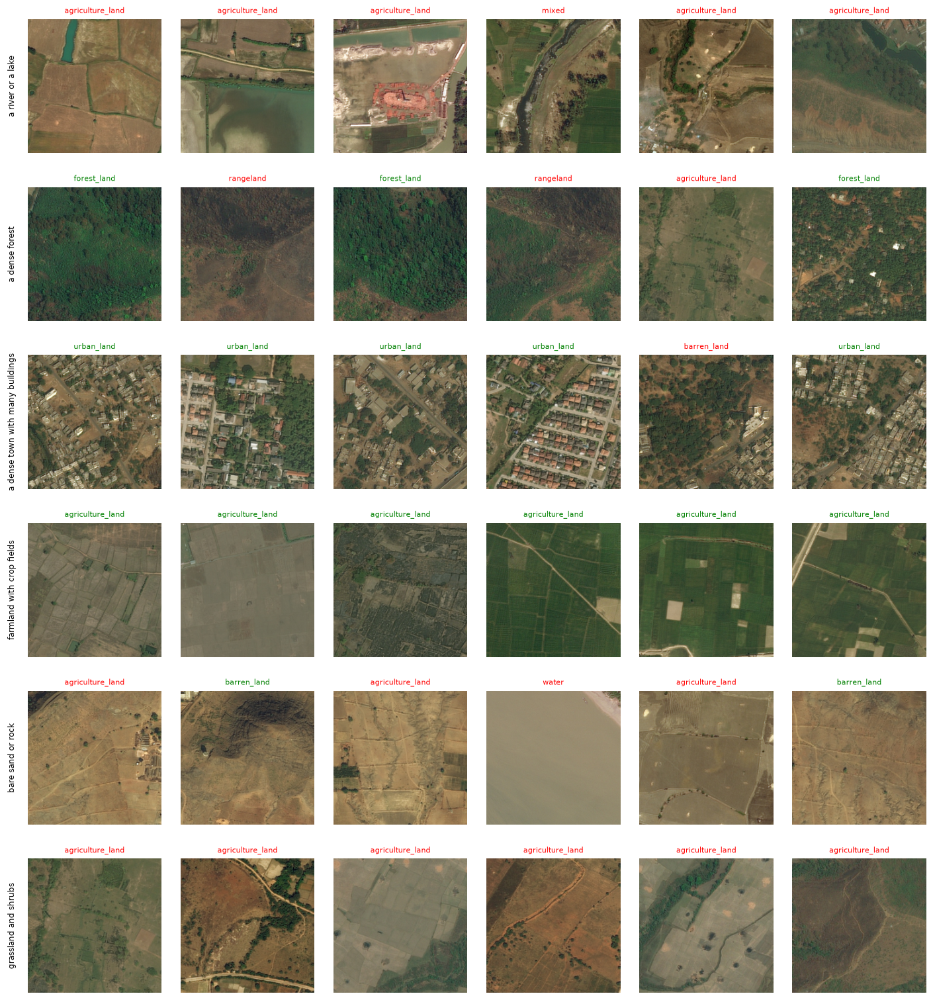

Vision-Language Models: Zero-Shot Classification and Text Retrieval
Vision-language models place images and sentences in the same embedding space, so an image can be classified by comparing it with descriptions of the classes, with no labelled training data, and an archive can be searched by typing what you are looking for. This notebook measures how far that goes for remote sensing. It scores RemoteCLIP and GeoRSCLIP zero-shot on the EuroSAT benchmark, shows how much the wording of the prompts matters, finds how many labels a simple classifier needs to beat zero-shot, searches DeepGlobe images by text and by example, and ends with what these models cannot do.
Overview
How CLIP-style models work
CLIP (Radford et al. 2021) trains an image encoder and a text encoder together on image and caption pairs. For a batch of pairs, the model is rewarded when each image’s embedding is most similar (cosine similarity, scaled by a learned temperature) to its own caption’s embedding and not to the other captions. After training, images and text share one space:
zero-shot classification: write one sentence per class (“a satellite image of a river”), embed the sentences, and give each image the class whose sentence is most similar;
text-to-image retrieval: embed a query sentence and rank images by similarity;
image-to-image retrieval: rank images by similarity to an example image.
Remote sensing CLIPs
General CLIP models saw few overhead images. RemoteCLIP (Liu et al. 2024) fine-tunes CLIP on remote sensing captions, many generated from detection and segmentation labels. GeoRSCLIP (Zhang et al. 2024) trains on RS5M, five million remote sensing image-text pairs. SkyCLIP (Wang et al. 2024) uses SkyScript, captions built from OpenStreetMap tags. All read RGB images of about 224 pixels.
Chat models such as GeoChat, EarthGPT, LHRS-Bot and EarthDial go further: a language model reads the image embeddings and answers free-form questions. They are listed in the catalog but are multi-billion-parameter models run through their authors’ code.
Prompts matter
The class sentence is part of the model. “River”, “a satellite image of a river” and “an aerial photo of a winding river” give different text embeddings and different accuracies. Averaging the embeddings of several templates (prompt ensembling) usually helps.
What zero-shot is not
A zero-shot label is a similarity, not a measurement. It works for classes that captions describe often and look distinctive from above; it fails for classes defined by function rather than appearance, for counting, for small objects, for bands other than RGB, and for place names. Every output here is scored against reference labels before it is trusted.
fm.load_model("remoteclip-vit-b-32"): enc.encode for images, enc.model.encode_text and enc.extras["tokenizer"] for text
search
fm.embedding_search(index, query, k=)
probes
fm.linear_probe
Learning objectives
Explain contrastive image-text training and the shared embedding space.
Run zero-shot classification on EuroSAT and read per-class accuracy and confusions.
Measure the effect of prompt templates and prompt ensembling.
Find how many labelled images a linear probe needs to beat zero-shot.
Search an image archive by text and by example, and score the results with reference masks.
Name the tasks vision-language models cannot do reliably.
Data
Dataset
Content
EuroSAT RGB
27,000 Sentinel-2 RGB images, 64 x 64 pixels (640 m), 10 land use classes
DeepGlobe land cover
50 cm satellite images (2448 x 2448 pixels) with masks in 7 classes
Contents
Setup
EuroSAT
Zero-shot classification
Prompt wording and ensembling
How many labels beat zero-shot?
Searching an archive with words
Searching with an example image
What vision-language models cannot do
Summary and exercises
Setup
Installation. This notebook needs installation option 6 (every GeoLattice module): pip install "geolattice[all]". See “Installation options” in the GeoLattice README. It also uses geolattice[rsense-foundation], which no GeoLattice option installs: pip install "geolattice[rsense-foundation]".
Code
import os # environment variablesos.environ.setdefault("USE_TF", "0") # keep transformers from loading TensorFlowimport time # timingimport warnings # warning controlwarnings.filterwarnings("ignore") # hide routine library warningsfrom pathlib import Path # file pathsimport matplotlib.pyplot as plt # figuresimport numpy as np # arraysimport pandas as pd # tablesimport rioxarray # noqa: F401 (registers the .rio accessor)import torch # PyTorch: every model runs on itimport xarray as xr # labelled rastersimport geolattice # GeoLatticeimport geolattice.rsense.foundation_models as fm # catalog, loaders, embeddings and probesplt.rcParams.update({"figure.dpi": 110}) # figure resolutionDATA = Path("../../../../Data/08_remote_sensing") # remote sensing data folderIC = DATA /"09_09_image_classification"# data shared with the image classification chapterCAP = DATA /"08_11_Capstones"# data shared with the capstonesOUT = Path("outputs") # results written by this notebookOUT.mkdir(exist_ok=True) # create it if neededDEVICE ="cuda"if torch.cuda.is_available() else"cpu"# run models on the GPU when there is oneSEED =0# one seed for every random stepnp.random.seed(SEED) # NumPytorch.manual_seed(SEED) # PyTorchprint("GeoLattice", geolattice.__version__, "| PyTorch", torch.__version__, "| device", DEVICE) # versions usedif DEVICE =="cuda": # name the GPUprint("GPU:", torch.cuda.get_device_name(0)) # GPU modelimport logging # library log messageslogging.getLogger().setLevel(logging.ERROR) # hide informational warnings from open_clip and the HF Hubimport zipfile # read EuroSAT straight from its zipfrom PIL import Image # imagesfrom sklearn.metrics import confusion_matrix # confusionsEUROSAT = CAP /"EuroSat.zip"# EuroSAT RGBDG = IC /"Landcover_data"# DeepGlobe land coverPHRASES = {"AnnualCrop": "annual cropland", "Forest": "forest", "HerbaceousVegetation": "herbaceous vegetation","Highway": "a highway", "Industrial": "industrial buildings", "Pasture": "pasture","PermanentCrop": "permanent cropland such as orchards", "Residential": "residential buildings","River": "a river", "SeaLake": "a sea or a lake"} # EuroSAT class -> words for the prompt
EuroSAT (Helber et al. 2019) is a standard benchmark of Sentinel-2 patches from 34 European countries. Its RGB version is read directly from the zip archive. A balanced test set of 100 images per class is drawn, and a separate pool of training images is kept for the probes.
Code
zf = zipfile.ZipFile(EUROSAT) # the archivefiles = [n for n in zf.namelist() if n.endswith(".jpg")] # every imagecls = np.array([n.split("/")[1] for n in files]) # class from the folder nameCLASSES =sorted(PHRASES) # the 10 classesrng = np.random.default_rng(SEED) # random generatortest_files, pool_files = [], [] # test set and training poolfor c in CLASSES: # balanced sampling per class idx = rng.permutation(np.flatnonzero(cls == c)) # shuffled images of class c test_files += [files[i] for i in idx[:100]]; pool_files += [files[i] for i in idx[100:200]] # 100 test, 100 poolload =lambda names: [Image.open(zf.open(n)).convert("RGB") for n in names] # read imagestest_img, pool_img = load(test_files), load(pool_files) # PIL imagesy_test = np.array([n.split("/")[1] for n in test_files]); y_pool = np.array([n.split("/")[1] for n in pool_files]) # labelsprint(len(files), "images in", len(CLASSES), "classes |", len(test_img), "test |", len(pool_img), "pool | size", test_img[0].size) # summaryfig, ax = plt.subplots(2, 10, figsize=(18, 4)) # two examples per classfor j, c inenumerate(CLASSES): # every classfor i inrange(2): # two examples ax[i, j].imshow(test_img[CLASSES.index(c) *100+ i]); ax[i, j].axis("off") # one image ax[0, j].set_title(c, fontsize=8) # class nameplt.tight_layout(); plt.show() # draw
27000 images in 10 classes | 1000 test | 1000 pool | size (64, 64)

Zero-shot classification
fm.zero_shot_classify embeds every image and one sentence per class built from a template, and returns the softmax of the scaled similarities plus the top class. Two models, one template: “a satellite image of {}.” (open_clip first builds the empty network and GeoLattice then loads all 302 weight tensors of the RemoteCLIP or GeoRSCLIP checkpoint into it.)
Code
names = [PHRASES[c] for c in CLASSES] # class wordsto_class =dict(zip(names, CLASSES)) # words -> EuroSAT classzs, t0 = {}, time.perf_counter() # results and timingfor model in ["remoteclip-vit-b-32", "georsclip-vit-b-32"]: # two remote sensing CLIPs df = fm.zero_shot_classify(test_img, names, model=model, template="a satellite image of {}.", device=DEVICE) # zero-shot zs[model] = df["prediction"].map(to_class).values # predicted classesprint(f"{time.perf_counter() - t0:.1f} s for {2*len(test_img)} images") # timingacc = pd.DataFrame({m: pd.Series(p == y_test).groupby(y_test).mean() for m, p in zs.items()}) # accuracy per classacc.loc["overall"] = [np.mean(p == y_test) for p in zs.values()] # overall accuracyacc.round(2)
10.5 s for 2000 images
remoteclip-vit-b-32
georsclip-vit-b-32
AnnualCrop
0.56
0.12
Forest
0.03
0.36
HerbaceousVegetation
0.59
0.18
Highway
0.52
0.95
Industrial
0.10
0.42
Pasture
0.01
0.32
PermanentCrop
0.00
0.08
Residential
0.17
0.99
River
0.73
0.48
SeaLake
0.88
0.98
overall
0.36
0.49
Code
best = acc.loc["overall"].idxmax() # the better modelcm = confusion_matrix(y_test, zs[best], labels=CLASSES, normalize="true") # row-normalized confusionsfig, ax = plt.subplots(figsize=(7.5, 6.5)) # one panelax.imshow(cm, cmap="Blues", vmin=0, vmax=1) # matrixax.set_xticks(range(10), CLASSES, rotation=60, ha="right", fontsize=8); ax.set_yticks(range(10), CLASSES, fontsize=8) # labelsfor (i, j), v in np.ndenumerate(cm): # write the sharesif v >=0.05: # skip tiny values ax.text(j, i, f"{v:.2f}", ha="center", va="center", fontsize=7, color="white"if v >0.5else"black") # valueax.set_xlabel("predicted"); ax.set_ylabel("reference"); ax.set_title(f"{best}, zero-shot"); plt.tight_layout(); plt.show() # draw

GeoRSCLIP (about 49 % overall) beats RemoteCLIP (about 36 %, close to the figure its authors report for EuroSAT with this encoder), and both are far from the 95 % or more that supervised networks reach on EuroSAT. The matrix shows where GeoRSCLIP fails. It recognises residential areas, highways and water bodies almost perfectly, the classes with a distinctive look and many captions. It confuses classes defined by use rather than appearance: annual cropland and pasture go to herbaceous vegetation, permanent crops (orchards, vineyards) to annual crops, industrial to residential. Dark, uniform forest patches go to “sea or lake”. EuroSAT images are only 64 pixels and are upsampled to 224, so they are much blurrier than the captioned images these models learned from.
Prompt wording and ensembling
The image and text encoders are loaded once with fm.load_model, so many prompts can be tried without re-embedding the images. Each template is scored alone, then all templates are averaged (prompt ensembling).
Code
clip = fm.load_model("remoteclip-vit-b-32", device=DEVICE) # RemoteCLIP: image and text encoderspre, tok = clip.extras["preprocess"], clip.extras["tokenizer"] # image preprocessing and tokenizerdef image_emb(images, batch=128): # unit-length image embeddings out = [] # batchesfor i inrange(0, len(images), batch): # in batches x = torch.stack([pre(im) for im in images[i:i + batch]]) # preprocessed tensors out.append(clip.encode(x).float().cpu().numpy()) # image embeddings E = np.concatenate(out) # all imagesreturn E / np.linalg.norm(E, axis=1, keepdims=True) # normalizedef text_emb(sentences): # unit-length text embeddingswith torch.no_grad(): # inference t = clip.model.encode_text(tok(sentences).to(clip.device)).float().cpu().numpy() # text embeddingsreturn t / np.linalg.norm(t, axis=1, keepdims=True) # normalizeE_test = image_emb(test_img) # test images, onceTEMPLATES = ["{}", "a satellite image of {}.", "an aerial photo of {}.", "a remote sensing image of {}.","a low resolution satellite image showing {}.", "a Sentinel-2 image of {}."] # prompt templatesscores, T_all = {}, [] # accuracies and text embeddingsfor t in TEMPLATES: # every template T = text_emb([t.format(n) for n in names]) # one sentence per class T_all.append(T) # keep for ensembling scores[t] = np.mean(np.array(CLASSES)[(E_test @ T.T).argmax(1)] == y_test) # accuracyens = np.mean(T_all, 0); ens /= np.linalg.norm(ens, axis=1, keepdims=True) # averaged class embeddingsscores["ensemble of all templates"] = np.mean(np.array(CLASSES)[(E_test @ ens.T).argmax(1)] == y_test) # ensemble accuracypd.Series(scores, name="accuracy").round(3).to_frame() # template effects
accuracy
{}
0.300
a satellite image of {}.
0.359
an aerial photo of {}.
0.344
a remote sensing image of {}.
0.327
a low resolution satellite image showing {}.
0.331
a Sentinel-2 image of {}.
0.341
ensemble of all templates
0.326
The bare class words are the worst prompt and “a satellite image of {}.” the best, a spread of six points from wording alone. Averaging all templates does not help here: it lands between the best and the worst single template. Prompt ensembling usually helps when templates are diverse and individually decent; it cannot fix a class whose words the model has not linked to its appearance.
How many labels beat zero-shot?
The same image embeddings feed a logistic regression trained on k labelled images per class from the pool, for k from 1 to 100. Each k is repeated five times with different draws.
Code
from sklearn.linear_model import LogisticRegression # few-shot classifierE_pool = image_emb(pool_img) # pool embeddingsrows = [] # few-shot resultsfor k in [1, 2, 5, 10, 25, 50, 100]: # labels per classfor rep inrange(5if k <100else1): # repeated draws r = np.random.default_rng(rep) # draw generator idx = np.concatenate([r.choice(np.flatnonzero(y_pool == c), k, replace=False) for c in CLASSES]) # k per class clf = LogisticRegression(max_iter=3000, C=10).fit(E_pool[idx], y_pool[idx]) # linear probe rows.append({"labels per class": k, "accuracy": np.mean(clf.predict(E_test) == y_test)}) # test accuracyfew = pd.DataFrame(rows).groupby("labels per class")["accuracy"].agg(["mean", "std"]) # mean and spreadax = few["mean"].plot(marker="o", logx=True, figsize=(7, 4.3), label="linear probe on RemoteCLIP embeddings") # curveax.fill_between(few.index, few["mean"] - few["std"], few["mean"] + few["std"], alpha=0.2) # spreadax.axhline(scores["ensemble of all templates"], color="k", ls="--", label="zero-shot, prompt ensemble") # zero-shot levelax.set_ylabel("EuroSAT test accuracy"); ax.legend(); ax.set_title("Few labels vs no labels"); plt.show() # drawfew.round(3)

mean
std
labels per class
1
0.569
0.052
2
0.664
0.031
5
0.778
0.016
10
0.836
0.012
25
0.874
0.009
50
0.895
0.006
100
0.901
NaN
One labelled image per class already beats zero-shot by a wide margin (about 57 % against 36 %), ten per class reach about 84 % and a hundred about 90 %. The image embeddings hold far more class information than the text side can retrieve, which is the practical lesson: zero-shot is for exploring an archive or for classes with no labels at all, and a handful of labels is worth more than any prompt.
Searching an archive with words
DeepGlobe images are 2448 pixels at 50 cm; each of 60 training tiles is cut into 4 x 4 crops of 612 pixels (306 m), giving an archive of 960 crops. Each crop’s reference class is the majority class of its mask when it covers at least half of the crop. Six queries are embedded and the 12 most similar crops are retrieved for each; precision at 12 is the share of retrieved crops whose reference class matches the query.
Code
DG_CLASSES = pd.read_csv(DG /"class_dict.csv") # class coloursmeta = pd.read_csv(DG /"metadata.csv").query("split == 'train'") # tiles with maskstiles = meta.sample(60, random_state=SEED) # 60 random tilescrops, crop_cls = [], [] # archive images and reference classesrgb2cls = {tuple(r[["r", "g", "b"]]): r["name"] for _, r in DG_CLASSES.iterrows()} # mask colour -> classfor _, t in tiles.iterrows(): # every tile im = Image.open(DG / t["sat_image_path"]).convert("RGB") # image mk = (np.asarray(Image.open(DG / t["mask_path"]).convert("RGB")) >128).astype(int) *255# mask, clean coloursfor r inrange(4): # 4 x 4 cropsfor c inrange(4): # columns box = (c *612, r *612, (c +1) *612, (r +1) *612) # crop window crops.append(im.crop(box).resize((224, 224))) # resized crop sub = mk[box[1]:box[3], box[0]:box[2]].reshape(-1, 3) # its mask pixels names_px, n = np.unique([rgb2cls.get(tuple(p), "unknown") for p in sub[::97]], return_counts=True) # sampled classes crop_cls.append(names_px[n.argmax()] if n.max() >=0.5* n.sum() else"mixed") # majority or mixedcrop_cls = np.array(crop_cls) # reference classesE_dg = image_emb(crops) # archive embeddingsprint(len(crops), "crops |", pd.Series(crop_cls).value_counts().to_dict()) # archive summary
QUERIES = {"water": "a satellite image of a river or a lake", "forest_land": "a satellite image of a dense forest","urban_land": "a satellite image of a dense town with many buildings","agriculture_land": "a satellite image of farmland with crop fields","barren_land": "a satellite image of bare sand or rock", "rangeland": "a satellite image of grassland and shrubs"} # text queriesQ = text_emb(list(QUERIES.values())) # query embeddingsidx, sim = fm.embedding_search(E_dg, Q, k=12) # top 12 crops per queryprec = {c: np.mean(crop_cls[idx[i]] == c) for i, c inenumerate(QUERIES)} # precision at 12base = {c: np.mean(crop_cls == c) for c in QUERIES} # random retrievalprint(pd.DataFrame({"precision at 12": prec, "share of archive (random)": base}).round(2)) # scoresfig, ax = plt.subplots(len(QUERIES), 6, figsize=(13, 2.3*len(QUERIES))) # top 6 per queryfor i, (c, q) inenumerate(QUERIES.items()): # every queryfor j inrange(6): # top hits ax[i, j].imshow(crops[idx[i, j]]); ax[i, j].axis("off") # hit ax[i, j].set_title(crop_cls[idx[i, j]], fontsize=7, color="green"if crop_cls[idx[i, j]] == c else"red") # its class ax[i, 0].text(-20, 112, q.replace("a satellite image of ", ""), rotation=90, va="center", ha="right", fontsize=8) # queryplt.tight_layout(); plt.show() # draw
precision at 12 share of archive (random)
water 0.08 0.03
forest_land 0.50 0.08
urban_land 0.83 0.10
agriculture_land 1.00 0.66
barren_land 0.25 0.06
rangeland 0.00 0.05

Text search works for classes with a distinctive look. “A dense town” returns urban crops for 10 of 12 hits against 10 % urban crops in the archive, and “a dense forest” returns forest for half its hits against 8 %. It fails for the rest. The water query returns fields with small ponds and canals, because only 33 crops are mostly water at 306 m. The rangeland query returns nothing labelled rangeland: in DeepGlobe rangeland is defined by use and looks like fallow fields. Agriculture reaches 100 %, but two thirds of the archive is agriculture, so that score means little. Precision must always be read against the share of the class in the archive.
Searching with an example image
An image can be the query too. Here the queries are EuroSAT images (10 m Sentinel-2) and the archive is DeepGlobe (50 cm): a 20 times difference in resolution.
Code
rows = [] # cross-dataset image queriespairs = {"River": "water", "Forest": "forest_land", "Residential": "urban_land", "AnnualCrop": "agriculture_land"} # EuroSAT -> DeepGlobefor es, dg in pairs.items(): # every pair q = E_test[y_test == es][:20] # 20 EuroSAT examples of the class ii, _ = fm.embedding_search(E_dg, q.mean(0, keepdims=True), k=12) # search with their mean embedding rows.append({"EuroSAT query": es, "DeepGlobe class": dg, "precision at 12": np.mean(crop_cls[ii[0]] == dg),"share of archive": np.mean(crop_cls == dg)}) # scorespd.DataFrame(rows).round(2)
EuroSAT query
DeepGlobe class
precision at 12
share of archive
0
River
water
0.58
0.03
1
Forest
forest_land
0.00
0.08
2
Residential
urban_land
0.75
0.10
3
AnnualCrop
agriculture_land
0.92
0.66
Image queries do better than text for water (58 % against 8 % with words) and almost as well for towns, even though the queries are 10 m Sentinel-2 images and the archive is 50 cm imagery. They fail completely for forest. A 10 m forest is a smooth dark green texture, while a 50 cm forest shows individual crowns, so at twenty times the resolution the two no longer look alike to the encoder.
What vision-language models cannot do
A short test of three requests the models are often asked to do: count objects, read infrared, and use place names. Each is scored on images whose answer is known.
Code
# 1. Counting: the probability given to "one", "two" or "many" buildings follows texture, not countscnt = text_emb([f"a satellite image with {w} buildings"for w in ["one", "two", "three", "many"]]) # counting promptsres = E_test[y_test =="Residential"][:50] @ cnt.T # residential images vs the promptsprint("residential images, chosen count prompt:", pd.Series(np.array(["one", "two", "three", "many"])[res.argmax(1)]).value_counts().to_dict()) # answers# 2. False colour: the same images shown as NIR-red-green would need infrared bands the model never sawprint("RemoteCLIP input:", fm.model_info("remoteclip-vit-b-32")["inputs"]) # RGB only# 3. Place names: the same forest images described with two countriespl = text_emb(["a satellite image of a forest in Germany", "a satellite image of a forest in Brazil"]) # place promptsf_img = E_test[y_test =="Forest"] # European forest imagesprint("European forests matched to 'Germany' vs 'Brazil':", np.bincount((f_img @ pl.T).argmax(1), minlength=2)) # place answer
residential images, chosen count prompt: {'many': 31, 'one': 19}
RemoteCLIP input: RGB 224 px + text
European forests matched to 'Germany' vs 'Brazil': [100 0]
Counting. Every residential image contains dozens of buildings, yet 19 of 50 were matched to “one building”. The similarity follows texture and brightness, not the number of objects.
Bands. The models take RGB only; infrared, the most informative part of the spectrum for vegetation and water, never reaches them.
Places. All 100 forest images were matched to “Germany” rather than “Brazil”. That looks right, but it reflects a learned link between temperate texture and the word, not geolocation: the images come from 34 countries, and none of them is Germany-specific. A place name in a prompt is a stylistic cue, never a location check.
Summary and exercises
Summary
CLIP-style models embed images and sentences in one space; zero-shot classification picks the class whose sentence is most similar to the image.
On EuroSAT, remote sensing CLIPs classify some classes well and confuse others that differ by use rather than appearance; every result needs a reference check.
Prompt wording changes accuracy; averaging several templates is a cheap improvement.
A linear probe on the same image embeddings overtakes zero-shot with a handful of labels per class.
Text search works for visually distinctive classes; image queries work even across a twentyfold change in resolution for some classes.
Counting, non-RGB bands and place names are outside what these models do reliably.
Exercises
Write three alternative phrasings for the two worst classes and find the best one. Is it still best with GeoRSCLIP?
Use remoteclip-vit-l-14 (download about 1.7 GB). Does a larger encoder fix the confusions?
Repeat the few-shot curve with GeoRSCLIP embeddings and with the SSL4EO ResNet-18 on the same RGB images. Which representation is most label-efficient?
Add the query “a satellite image of a road” to the DeepGlobe search. Which class do the hits belong to, and why is the precision hard to define?
Re-run zero-shot on EuroSAT images upsampled from 64 to 224 pixels with nearest neighbour instead of bicubic resampling. Does the interpolation matter?
References
Helber, P. et al. (2019). EuroSAT: a novel dataset and deep learning benchmark for land use and land cover classification. IEEE JSTARS.
Demir, I. et al. (2018). DeepGlobe 2018: a challenge to parse the Earth through satellite images. CVPR Workshops.
Liu, F. et al. (2024). RemoteCLIP: a vision language foundation model for remote sensing. IEEE TGRS.
Radford, A. et al. (2021). Learning transferable visual models from natural language supervision (CLIP). ICML.
Wang, Z. et al. (2024). SkyScript: a large and semantically diverse vision-language dataset for remote sensing. AAAI.
Zhang, Z. et al. (2024). RS5M and GeoRSCLIP: a large scale vision-language dataset and a large vision-language model for remote sensing. IEEE TGRS.